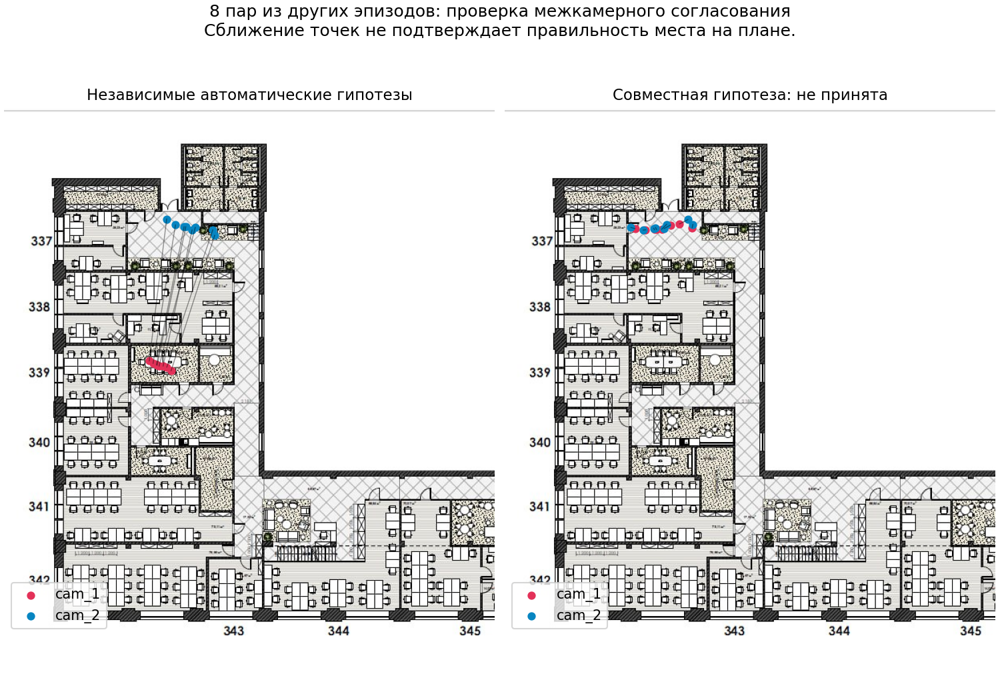
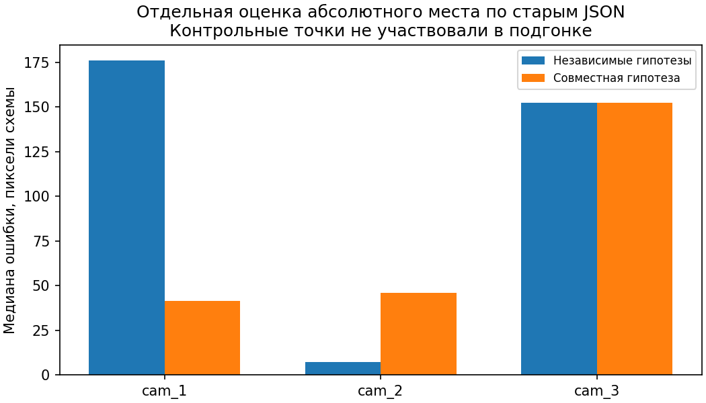
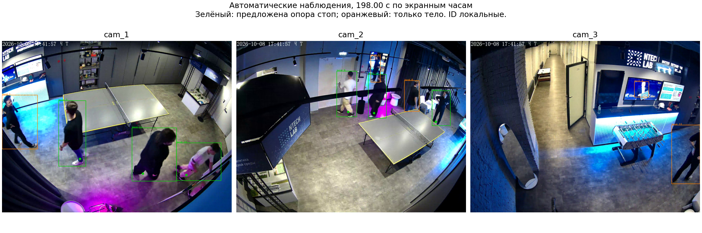

Медианное расхождение 8 автоматически предложенных пар из других эпизодов. Это согласованность проекций, а не измеренная ошибка положения людей и не подтверждение их личностей.

| Камера | До, медиана ошибки | Совместная гипотеза |
|---|---|---|
| cam_1 | 176.0 | 41.5 |
| cam_2 | 7.4 | 45.7 |
| cam_3 | 152.4 | 152.4 |
Пиксели схемы по старым контрольным JSON. Для камеры 2 точность ухудшилась; приближение точек друг к другу не означает правильную привязку к помещению.


В пилоте обработаны камеры 1–3. Для камеры 3 надёжной связи по движению недостаточно. Записи 4–5 в этом прогоне не обрабатывались. Готовый трекинг и его ID не изменены.
Полный протокол: provenance.json. Численные результаты: evaluation-final.json. Контрольные JSON не передавались в расчёт привязки.